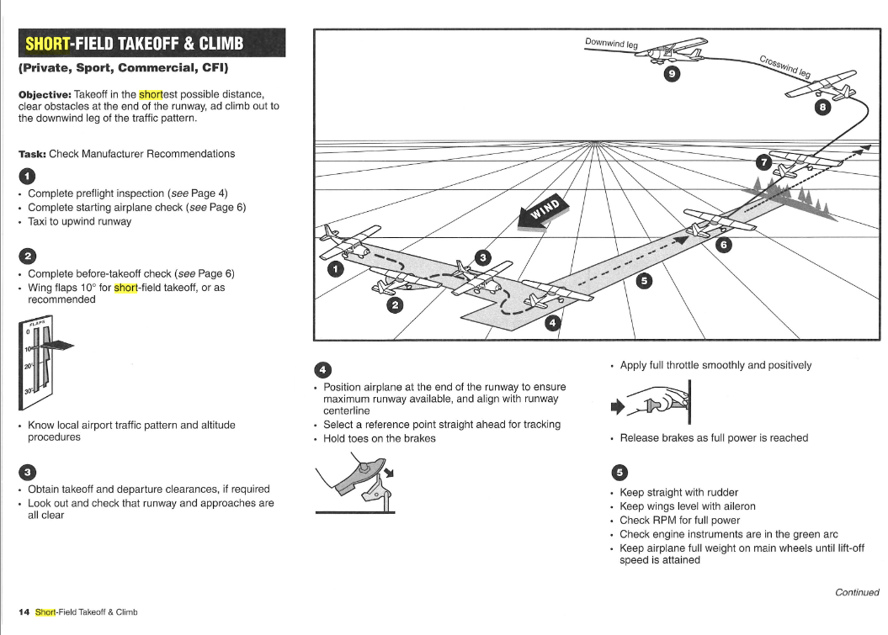
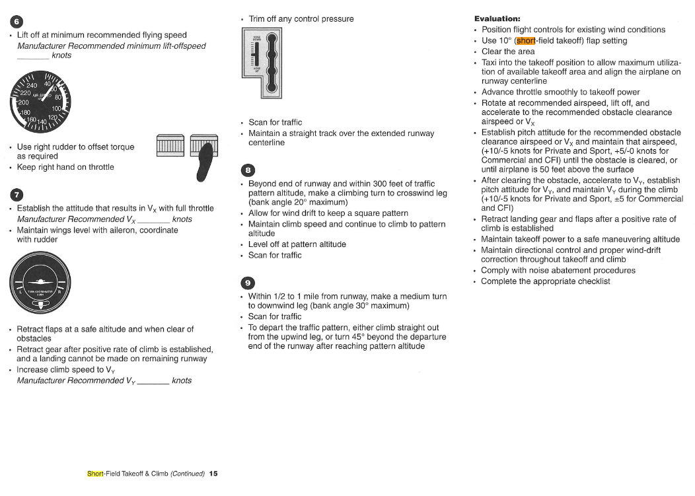
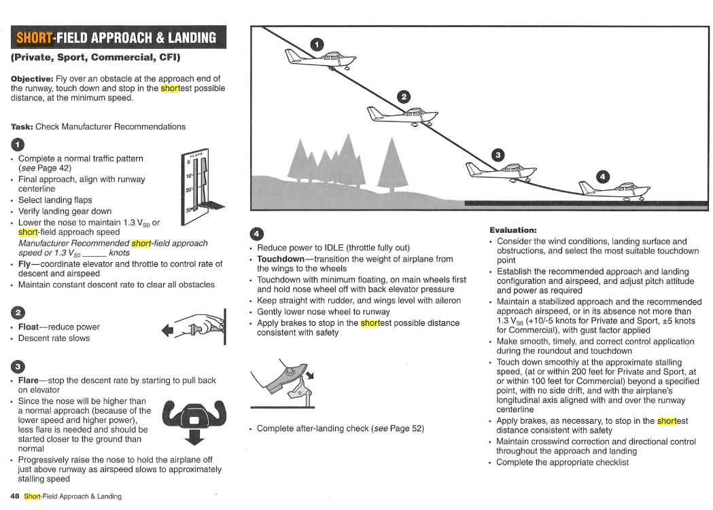

Simulator Training Lessons
From basic aircraft control to PPL maneuvers. Click a lesson below to expand detailed simulator guides and standards.
In straight and level, one must maintain altitude while retaining heading. You should settle your throttle at your aircraft's cruise setting; in the case of the simulator, 2200 RPM should be able to maintain straight and level flight.
Ideally, you should pay attention to:
- Attitude Indicator
- Altimeter
- Vertical Speed Indicator
- Heading Indicator
By no means should you disregard both the Airspeed Indicator and Turn Coordinator. The aforementioned four instruments are simply more prioritized when maintaining a straight and level flight.
Let this be known throughout the duration of the simulator notes.
Your attitude indicator should have the wings set on the horizon, which maintains a constant altitude; given that throttle is set to its cruise setting. Constant altitude indicates a static vertical speed indicator, which then makes it easier for the aircraft to maintain heading.
Instructor: Maintain 3000 feet, heading 090°.
Student: Maintaining 3000 feet, heading 090°.
In level turns, one must maintain altitude while performing a turn to either the left or right. Your instructor will give a desired type of turn that you must perform.
Ideally, you should pay attention to:
- Attitude Indicator
- Altimeter
- Vertical Speed Indicator
- Heading Indicator
- Turn Coordinator
Your attitude indicator must be a bit above the horizon to maintain altitude amidst a turn; a turn can decrease your altitude because there's less area of lift under your wing.
Your altimeter and vertical speed indicator must correspond to either your level, climbing, and descending turn.
Your heading indicator must rotate to your specified "next heading" from your "present heading".
Lastly, your turn coordinator should be wings at turn index, ball center to maintain a coordinated turn; this will prove crucial in a future lesson.
| Type of Turn | Heading | Bank Angle | Recovery Heading |
|---|---|---|---|
| Shallow | 90° | 10° | 5 |
| Medium | 180° | 20° | 10 |
| Steep | 360° | 30° | 15 |
When solving for your recovery heading, always ADD when going to the LEFT, and SUBTRACT when going to the RIGHT. In accomplishing a coordinated turn, the ball on the turn coordinator must always be centered; do this through the use of rudder.
Situation: Altitude of 3000 feet, at heading 090°.
Instructor: Make a shallow turn to the right.
Procedure:
- Making a 90° turn to the right.
- Present heading of 090°.
- Next heading of 180°.
- Bank angle of 10°.
- Recovery heading of 175°.
- Clearing Turns — opposite, front, intended
- Commence.
- Established a new heading of 180°, at an altitude of 3000 feet.
In climb and descent, one must maintain a constant rate of either climb or descent, depending on the situation given by your instructor. In a climb, your throttle must be set to full power before pitching up while a descent requires your throttle setting to decrease to around 1900 RPM before pitching down.
Ideally, you should pay attention to:
- Attitude Indicator
- Altimeter
- Vertical Speed Indicator
In a climb, the wings in the attitude indicator must be situated above the horizon, while in a descent, said wings must be situated below the horizon. If not given enough power, you will descend if wings are at most, horizon level. Your altimeter should increase for a climb, and decrease for a descent. You can make accurate predictions on where you need to level off after either a climb or descent with the Vertical Speed Indicator.
Instructor: Climb to 3000 feet at 500 feet per minute, heading 090°.
Student: Climbing to 3000 feet at 500 feet per minute, heading 090°.
Never forget to maintain heading all throughout; it's going to be more prioritized in certain lessons. However, never forget the importance of the basics of straight and level flight. In addition, always call out for every 1000 feet passed. Afterwards, remember to always call out an established instruction like: established an altitude of 3000 feet.
In airspeed control, one must control the aircraft's airspeed in any scenario, be it during cruise, climb, or descent. Properly trimming your aircraft and applying an adequate amount of throttle are methods that prove vital to your success here.
Ideally, you should pay attention to:
- Airspeed Indicator
- Altimeter
Procedure
- POWER — adjust your power for altitude.
- YOKE — control your airspeed with the yoke.
- TRIM — trim to stabilize and relieve pressure.
YOKE is for AIRSPEED while THROTTLE is for ALTITUDE.
In this lesson, you will not only learn how to properly take off, but you will also beintroduced to radio communications and other necessary dialogue. This lesson will cover the following: ALPHA LIMA, SAFETY BRIEFING, TAKEOFF BRIEFING, LUBANG TRAFFIC ADVISORY, S-CHECK, & TAKEOFF PROCEDURE.
*Before starting engine checklist *
After before starting engine checklist, use backup radio to communicate with ATC (for controlled airport) or with Alpha Lima (if in Lubang).
If you do not have backup radio you can use radio of the aircraft.
P: Alpha Lima Good morning! RPC-123
AL: Good morning! RPC-123 Go ahead
P: RPC-123 requesting for engine start up
AL: RP-C123 Engine start up approved
P: Engine start approved RP-C123
*Starting engine checklist *
set STBY TRANSPONDER, COM1: 121.5 COM2: 128.4 (Lubang Unicom, Transponder 1200) NAV1: 117.5 NAV2: 114.4 (Manila VOR)
*After starting engine checklist do radio check *
P: RP-C123 radio check 1 2 3 4 5 how do you read ?
AL: Loud & clear
P: Loud & clear, RP-C 123
P: RP-C123 commencing run up
*Run up procedure checklist *
Safety briefing
Good day Ma'am/sir
This will be a local flight from RPLU runway 07, our flight time will be (MINUTES). We will be flying at an altitude of ft at a ground speed of knots.
In case of emergency, we have emergency exits located at both sides of the aircraft, you have your life rest located
In case of fire, you have a fire extinguisher at the side. lastly there is a first aid kit.
At this time, make sure your seatbelts are securely fastened and enjoy your flight
thank you.
P: RP-C123 taxiing to holding point
*Before take off checklist *
P: Lubang traffic advisory. RP-C123 on holding point any aircraft on base or final please acknowledge. (say it two times with pause)
> if there is still aircraft on final : RP-C123 will enter active runway after RP-C____ departure.
> if there is one aircraft on final and one on base to depart before entering active runway.
> you can enter active runway when another aircraft commence a go around.
P: Negative Traffic Report RP-C123 entering active runway departure.
Takeoff Briefing
This will be a flaps 1 takeoff for runway 07. Cockpit silence should be observed except for airspeed and emergency callouts.
> Any malfunction before Vr, I will abort takeoff, command is "STOP". I will close the throttle and apply heavy brakes. as the aircraft comes to full stop.I will perform an emergency checklist.
> Any malfunction after the Vr with sufficient runway, I will abort takeoff. I will close the throttle and apply heavy brakes. as the aircraft comes to full stop, I will perform an emergency checklist.
> Any malfunction after airborne, I will definitely re-land and glide the aircraft I will maintain the speed of 65 knots and land straight ahead. I will consider 45 degrees deviation to the left and right to avoid any obstacles.
> Otherwise this will be a normal takeoff for runway 07.
If you have anything to add sir/ma'am, please acknowledge.
*S-Check*
1. Magnetic Compass - ALIGNED WITH THE RUNWAY IN USE
2. Airspeed Indicator - ZERO
3. Attitude Indicator - WINGS LEVEL
4. Altimeter - ZERO
5. VSI - ZERO
6. Heading Indicator - SYNCHRONIZED WITH MAGNETIC COMPASS
7. Turn Coordinator - WINGS LEVEL AND BALL CENTER
8. Engine Instruments - GREEN
9. Battery Master - ON
10. Alternator Switches - BOTH ON
11. Avionics Master - ON
12. Ignition Switch - BOTH
13. Parking Brake - RELEASE
14. NAV LIGHTS - ON
15. STROBE LIGHTS - ON
16. TAXI LIGHTS - OFF
17. LANDING LIGHTS - ON
18. TANK SELECT - BOTH
19. THROTTLE - 1000 RPM
20. MIXTURE - RICH
21. FLAPS - 1 or 10 DEGREES
22. RADIOS & ELECTRICAL EQUIPMENT - SET
23. TRIM - SET FOR TAKEOFF/NEUTRAL
24. “S-CHECK COMPLETE”
P: RP-C 123 now rolling
*Take off Procedure*
1. Apply Brakes
2. Apply 2000 RPM
3. Release Brakes
4. Heels on the floor
5. Apply Full Power
6. Maintain Runway Centerline
7. RPM Stable
8. Engine Instruments on Green
9. Airspeed Alive
10. Vr - 55 kts, Rotate
11. Positive Rate of Climb
(Airborne)
12. Tap Brakes
13. Accelerate to Vy = 74 kts
14. 300 ft - Landing Lights OFF / Flaps Up (After takeoff checklist)
15. Climb to 1000 ft - (Cruise Checklist - Level off, Airspeed increase, reduce power and trim: “Push Power Trim”)
Notes
Always set altimeter to 0 and set Flaps 1 before takeoff
Maintain Runway Heading
Maintain Wings Level
Maintain Airspeed 75 kts during takeoff
Set RPM to 2100 when cruising/established desired altitude (1000 ft)
A training maneuver in which the airplane maintains an equal distance from all sides of the selected rectangular surface.
- Maintain 1500ft and Heading
- Upwind and Final (070/250)
- Crosswind (340/160)
- Downwind (250/070)
- Base (160/340)
Callouts (to remind yourself what to do), Report (Identification, position, action, destination, intent, headings, then commence and establish), Maintain Heading & Check Airspeed.
Memorize the pattern.
Example:
RPC 123
Abeam Shorline
Turning Downwind
07 Lubang for Full Stop
Present Heading 070
Next Heading 250
Clearing Turns
Commence
Establish
RPC 123
Establish Downwind
07 Lubang for Full Stop
Frequencies:
Set Com: 121.9
Set Nav: 117.50
Set CDI for VOR (Course Heading 070)
DME Locations:
0.7 Shoreline (after takeoff)
1.8 Green house
2.2 Red house
Perform a series of turns while using the turn coordinator for standard rate of turn monitoring. Standard rate of turn is when the wings of the miniature aircraft are pointed to the standard rate turn index. The pilot should continuously sync the Turn Coordinator and Heading Indicator while monitoring a clock/timer for the correct timing of the turn.
Standard rate of turn = 3°/ Second
- 30° - 10 Seconds
- 90° - 30 Seconds
- 180° - 60 Seconds / 1 Min.
- 270° - 90 Seconds / 1 ½ Min.
- 360° - 120 Seconds / 2 Mins.
Callouts
Make a ___ minute timed turn to the L/R
Present heading
Next heading
Start time __ End time __
Clearing Turns
Commence
Example: Make a 1 minute timed turn to the left
- Present Heading = 360°
- Next Heading 180°
- "Start time at 12, End time at 12."
- Clear Right, Front, Left. > Commence.
Callouts Every 10 Seconds: (Callout the time on the watch and the current heading during the turn)
Example:
at 2 I should be at 030
at 4 I should be at 060
at 6 I should be at 090
so on and so forth.
(Step by step guide copied from the reviewer prepared by Capt. Vidal)
Airspeeds to maintain
FIRST LEG
SECOND LEG
THIRD LEG
FINAL LEG
Takeoffs and climbs from soft fields require the use of operational techniques for gettingthe airplane airborne as quickly as possible to eliminate the drag caused by tall grass, etc., and
may require climbing over an obstacle. The technique makes judicious use of ground effect to
reduce landing gear drag and requires an understanding of the airplane’s slow speed
characteristics and responses. These same techniques are also useful on a rough field where
the pilot should get the airplane off the ground as soon as possible to avoid damaging the
landing gear.
Taking off from a soft surface or through surfaces or long, wet grass reduces theairplane’s ability to accelerate during the takeoff roll and may prevent the airplane from reaching
adequate takeoff speed if the pilot applies normal takeoff techniques. The pilot should be aware
that the correct takeoff procedure for soft fields is quite different from the takeoff procedures
used for short fields with firm, smooth surfaces. To minimize the hazards associated with
takeoffs from soft or rough fields, the pilot should transfer the support of the airplane’s weight as
rapidly as possible from the wheels to the wings as the takeoff roll proceeds by establishing and
maintaining a relatively high AOA or nose-high pitch attitude as early as possible. The pilot
should lower the wing flaps prior to starting the takeoff (if recommended by the manufacturer) to
provide additional lift and to transfer the airplane’s weight from the wheels to the wings as early
as possible. The pilot should maintain a continuous motion with sufficient power while lining up
for the takeoff roll as stopping on a soft surface, such as mud or snow, might bog the airplane
down.
Objective: must exercise positive and precise control of airplane attitude and airspeed sothat takeoff and climb performance result in the shortest ground roll and the steepest angle of climb. When performing takeoffs and climbs from fields where the takeoff area is short or the available takeoff area is restricted by obstructions, the pilot should operate the airplane at the maximum limit of its takeoff performance capabilities. To depart from such an area safely, the pilot needs to exercise positive and precise control of airplane attitude and airspeed, so that takeoff and climb performance result in the shortest ground roll and the steepest angle of climb. The pilot should consult and follow the performance section of the AFM/POH to obtain the power setting, flap setting, airspeed, and procedures prescribed by the airplane’s manufacturer. The pilot should have adequate knowledge in the use and effectiveness of the best angle-of-climb speed (Vx) and the best rate-of-climb speed (Vy) for the specific makes and model of airplane being flown in order to safely accomplish a takeoff and maximum performance.
  Start by facing downwind. (fly with the wind)
Then abeam your straight line reference
Commence s-turn.
Start by facing downwind. (fly with the wind)
Then find a ground reference point and fly around it in a circular path.
The radius of the circle should be constant and the airplane should maintain
a constant altitude and airspeed throughout the maneuver.
Note:
Power off Stalls occur during Landing Operations
PUSH POWER TRIM
(slightly Push the yoke or release back pressure, apply Full Power, Trim the aircraft)
Note:
Power on Stalls occur during Takeoff Operations
PUSH POWER TRIM
(slightly Push the yoke or release back pressure, apply Full Power, Trim the aircraft)